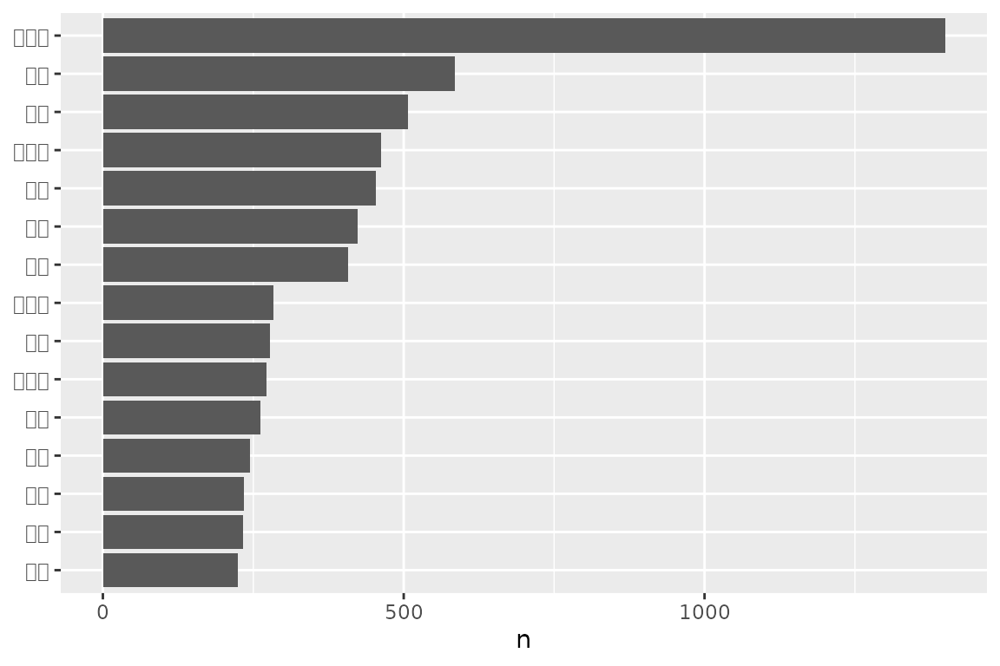
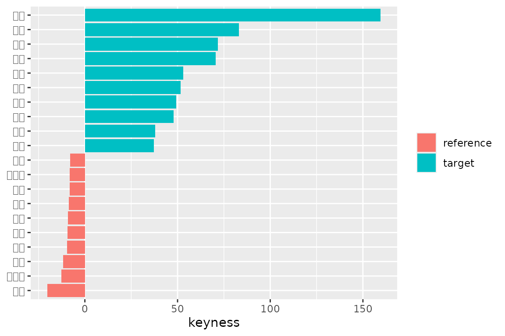
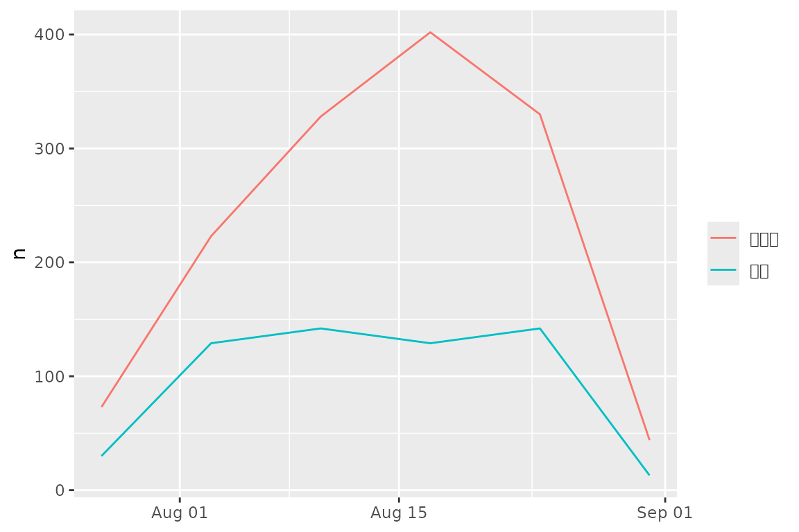

knewsr는 한국어 뉴스 데이터를 표준 스키마 → 전처리 → 토큰 테이블 → 기초 통계 순서로 다룹니다. 모든 결과는 tibble 또는 sparse matrix입니다.
1. 읽기
모든 입력은 표준 스키마(doc_id, date,
source, title, text,
keyword)로 바뀝니다.
파일은 read_news()로 읽습니다. Excel, CSV/TSV(UTF-8,
CP949), JSON, JSONL을 받고, 폴더를 주면 안의 파일을 모두 읽어 합칩니다.
BigKinds 내보내기도 같은 함수로 읽습니다.
path <- system.file("extdata", "bigkinds_sample.xlsx", package = "knewsr")
read_news(path)
#> Detected columns: date <- `일자`, source <- `언론사`, title <- `제목`, keyword
#> <- `키워드`
#> # A tibble: 31 × 6
#> doc_id date source title text keyword
#> <chr> <date> <chr> <chr> <chr> <chr>
#> 1 1 2020-01-31 경향신문 "[사설] 한반도 긴장 높인 북한의 군사정찰위성 발사 규탄한다"… NA 한반도,긴장…
#> 2 2 2020-01-30 한겨레 "허리에 '캡사이신' 찬 경찰 민주노총, 6시간 만에 자진해산"… NA 허리,캡사이…
#> 3 3 2020-01-29 조선일보 "윤 대통령 ‘외국인 가사도우미’ 이어 돌봄 보육도 “시장화”"… NA 대통령,외국…
#> 4 4 2020-01-28 중앙일보 "윤 대통령, 스가 전 총리 만나 “한일 관계, 완전한 복원” … NA 대통령,스가…
#> 5 5 2020-01-27 동아일보 "‘직권남용죄’ 남용 유감" NA 직권남용죄,…
#> 6 6 2020-01-26 경향신문 "‘외국인 가사도우미’ 검토하라는 대통령 희생 강요받는 노동"…… NA 외국인,가사…
#> 7 7 2020-01-25 경향신문 "“한상혁 면직 언론장악 시도” 민주 방송법 개정으로 맞대응"…… NA 한상혁,면직…
#> 8 8 2020-01-24 한겨레 "[사설] 한상혁 위원장 면직, 방송 장악 신호탄인가"…… NA 면직,한상혁…
#> 9 9 2020-01-23 한겨레 "한 총리 \"시찰단 브리핑, 방류절차 투명성 보였다 매우 만족… NA 브리핑,총리…
#> 10 10 2020-01-22 한겨레 "한국이 올인하는 인 태 전략은 안녕한가? [정의길의 세계, 그… NA 한국,올인,…
#> # ℹ 21 more rows이미 메모리에 있는 data.frame은 as_news()로 바꿉니다.
흔한 컬럼명(headline, body,
content, pubDate, press 등)은
자동으로 찾고, 찾은 결과를 메시지로 알려 줍니다. 자동 인식이 틀리면
text = "본문열"처럼 직접 지정합니다.
other <- data.frame(headline = "정부, 예산안 발표", body = "정부가 내년 예산안을 발표했다.",
pubDate = "2024.01.02", press = "A일보")
as_news(other)
#> Detected columns: date <- `pubDate`, source <- `press`, title <- `headline`,
#> text <- `body`
#> # A tibble: 1 × 6
#> doc_id date source title text keyword
#> <chr> <date> <chr> <chr> <chr> <chr>
#> 1 1 2024-01-02 A일보 정부, 예산안 발표 정부가 내년 예산안을 발표했다.…… NA
news <- as_news(president_lee_2026_08)
#> Detected columns: doc_id <- `뉴스 식별자`, date <- `일자`, source <- `언론사`,
#> title <- `제목`, keyword <- `키워드`
news
#> # A tibble: 300 × 6
#> doc_id date source title text keyword
#> <chr> <date> <chr> <chr> <chr> <chr>
#> 1 01101001.20260831191916001 2026-08-31 한겨레 "이토록 뜨거운데, 바뀌지 … NA 뉴스룸,이승…
#> 2 01101101.20260831163230001 2026-08-31 한국일보 "\"외부 조문 사양\"에도… NA 사양,외부,…
#> 3 01100701.20260831142845001 2026-08-31 세계일보 "오세훈 “李대통령 부동산 … NA 오세훈,대통…
#> 4 01100501.20260831111921003 2026-08-31 문화일보 "與 전은수 “국힘, 발목잡… NA 국힘,전은수…
#> 5 01100701.20260831100115001 2026-08-31 세계일보 "국토장관 후보자 \"용산공… NA 용산공원,국…
#> 6 01100501.20260831070524001 2026-08-31 문화일보 "용혜인 지명에 “꼴페미 정… NA 용혜인,지명…
#> 7 01101101.20260831001113001 2026-08-31 한국일보 "[사설] 지지율 하락 속 … NA 지지율,하락…
#> 8 01100801.20260830233831001 2026-08-30 조선일보 "[태평로] 국보법 위반해도… NA 국보법,위반…
#> 9 01100501.20260830224353001 2026-08-30 문화일보 "김승원 법무장관 후보자 “… NA 대전환,김승…
#> 10 01100101.20260830205932001 2026-08-30 경향신문 "“이용자 적어 없앤다니 취… NA 이용자,취약…
#> # ℹ 290 more rows1-1. 수집
네이버 뉴스 검색 API(제목·요약·날짜·링크)와 RSS/Atom 피드에서 바로 수집할 수 있습니다.
# NAVER_CLIENT_ID, NAVER_CLIENT_SECRET 환경변수 필요
naver <- collect_naver("기준금리", n = 300)
collect_rss(system.file("extdata", "sample_rss.xml", package = "knewsr"))
#> # A tibble: 5 × 8
#> doc_id date source title text keyword feed link
#> <chr> <date> <chr> <chr> <chr> <chr> <chr> <chr>
#> 1 https://www.yna.co.kr/view/… 2026-11-14 연합뉴스 … "메타엠… NA NA /hom… http…
#> 2 https://www.yna.co.kr/view/… 2026-11-14 연합뉴스 … "美교통… NA NA /hom… http…
#> 3 https://www.yna.co.kr/view/… 2026-11-14 연합뉴스 … "모레노… NA NA /hom… http…
#> 4 https://www.yna.co.kr/view/… 2026-11-14 연합뉴스 … "이탈리… NA NA /hom… http…
#> 5 https://www.yna.co.kr/view/… 2026-11-14 연합뉴스 … "한국 … NA NA /hom… http…2. 전처리
clean_news()는 말머리([속보]), 기자
바이라인, 이메일, URL, 특수문자를 지웁니다.
news <- clean_news(news)
summarise_corpus(news, by = "source")
#> # A tibble: 10 × 4
#> source n first_date last_date
#> <chr> <int> <date> <date>
#> 1 세계일보 48 2026-08-02 2026-08-31
#> 2 한국일보 38 2026-08-01 2026-08-31
#> 3 한겨레 35 2026-08-02 2026-08-31
#> 4 문화일보 34 2026-08-01 2026-08-31
#> 5 중앙일보 30 2026-08-02 2026-08-30
#> 6 경향신문 29 2026-08-03 2026-08-30
#> 7 서울신문 23 2026-08-02 2026-08-28
#> 8 동아일보 22 2026-08-01 2026-08-26
#> 9 조선일보 21 2026-08-05 2026-08-30
#> 10 국민일보 20 2026-08-01 2026-08-303. 토큰화
기본값은 BigKinds keyword 컬럼을 쓰는 것이라 형태소
분석기가 필요 없습니다. keep으로 지정한 컬럼은 토큰
테이블에 함께 붙습니다.
tokens <- tokenize_ko(news, keep = "source")
tokens
#> # A tibble: 63,945 × 3
#> doc_id source token
#> <chr> <chr> <chr>
#> 1 01101001.20260831191916001 한겨레 뉴스룸
#> 2 01101001.20260831191916001 한겨레 이승준
#> 3 01101001.20260831191916001 한겨레 정치데스크
#> 4 01101001.20260831191916001 한겨레 전쟁
#> 5 01101001.20260831191916001 한겨레 17
#> 6 01101001.20260831191916001 한겨레 전당대회
#> 7 01101001.20260831191916001 한겨레 더불어민주당
#> 8 01101001.20260831191916001 한겨레 전당
#> 9 01101001.20260831191916001 한겨레 대회
#> 10 01101001.20260831191916001 한겨레 가지
#> # ℹ 63,935 more rows본문을 직접 분석하려면 시스템에 MeCab-ko와 mecab-ko-dic을 설치하고
RcppMeCab 패키지를 설치합니다.
options(knewsr.mecab_dic = "/usr/lib/x86_64-linux-gnu/mecab/dic/mecab-ko-dic")
tokenize_ko(news, field = "text", pos = "noun")4. 기초 분석
count_terms(tokens)
#> # A tibble: 10,098 × 2
#> token n
#> <chr> <int>
#> 1 대통령 1400
#> 2 정부 585
#> 3 후보 507
#> 4 이재명 463
#> 5 대표 454
#> 6 의원 423
#> 7 국민 407
#> 8 민주당 283
#> 9 정책 278
#> 10 청와대 272
#> # ℹ 10,088 more rows
count_terms(tokens, by = "source", by_doc = TRUE)
#> # A tibble: 23,334 × 3
#> source token n
#> <chr> <chr> <int>
#> 1 세계일보 이재명 46
#> 2 세계일보 대통령 43
#> 3 한국일보 이재명 38
#> 4 한국일보 대통령 36
#> 5 문화일보 이재명 34
#> 6 세계일보 정부 34
#> 7 한겨레 이재명 34
#> 8 한겨레 대통령 32
#> 9 경향신문 이재명 29
#> 10 중앙일보 이재명 29
#> # ℹ 23,324 more rows
tf_idf(tokens, by = "source")
#> # A tibble: 23,334 × 6
#> source token n tf idf tf_idf
#> <chr> <chr> <int> <dbl> <dbl> <dbl>
#> 1 조선일보 장씨 30 0.00668 2.30 0.0154
#> 2 서울신문 하우스 15 0.00281 2.30 0.00647
#> 3 경향신문 정지 15 0.00270 2.30 0.00621
#> 4 동아일보 요금 12 0.00251 2.30 0.00578
#> 5 문화일보 병역 15 0.00236 2.30 0.00544
#> 6 서울신문 버스 24 0.00450 1.20 0.00542
#> 7 동아일보 전술 11 0.00230 2.30 0.00530
#> 8 서울신문 딥페이크 11 0.00206 2.30 0.00475
#> 9 국민일보 토허구역 8 0.00190 2.30 0.00437
#> 10 동아일보 채점 9 0.00188 2.30 0.00433
#> # ℹ 23,324 more rows
ngrams_ko(news, n = 2)
#> # A tibble: 63,645 × 2
#> doc_id token
#> <chr> <chr>
#> 1 01101001.20260831191916001 뉴스룸 이승준
#> 2 01101001.20260831191916001 이승준 정치데스크
#> 3 01101001.20260831191916001 정치데스크 전쟁
#> 4 01101001.20260831191916001 전쟁 17
#> 5 01101001.20260831191916001 17 전당대회
#> 6 01101001.20260831191916001 전당대회 더불어민주당
#> 7 01101001.20260831191916001 더불어민주당 전당
#> 8 01101001.20260831191916001 전당 대회
#> 9 01101001.20260831191916001 대회 가지
#> 10 01101001.20260831191916001 가지 장면
#> # ℹ 63,635 more rows문서-단어 행렬과 공기어:
dtm <- as_dtm(tokens, weight = "tfidf")
dim(dtm)
#> [1] 300 10098
cooccurrence(tokens, top_n = 30)
#> # A tibble: 435 × 3
#> term1 term2 n
#> <chr> <chr> <dbl>
#> 1 대통령 이재명 270
#> 2 이재명 정부 186
#> 3 대통령 정부 165
#> 4 국민 이재명 150
#> 5 국민 대통령 143
#> 6 이재명 청와대 112
#> 7 강조 이재명 111
#> 8 대통령 청와대 111
#> 9 이재명 추진 108
#> 10 더불어민주당 이재명 103
#> # ℹ 425 more rows
cooccurrence(tokens, window = 2, top_n = 30)
#> # A tibble: 331 × 3
#> term1 term2 n
#> <chr> <chr> <dbl>
#> 1 대통령 이재명 328
#> 2 이재명 정부 95
#> 3 대통령 청와대 60
#> 4 부동산 정책 46
#> 5 민주당 의원 41
#> 6 대통령 대표 39
#> 7 대통령 민주당 39
#> 8 국민 대통령 36
#> 9 서울 시장 36
#> 10 대통령 의원 36
#> # ℹ 321 more rows집단 비교(키니스)와 기간별 추이:
k <- keyness(tokens, group = "source", target = "조선일보")
head(k)
#> # A tibble: 6 × 5
#> token n_target n_reference keyness p
#> <chr> <int> <int> <dbl> <dbl>
#> 1 장씨 30 0 160. 1.41e-36
#> 2 실종 26 17 83.0 8.16e-20
#> 3 발견 20 9 71.7 2.49e-17
#> 4 경장 17 4 70.5 4.60e-17
#> 5 한미 24 35 53.0 3.41e-13
#> 6 시신 11 1 51.7 6.39e-13
trend <- term_trend(tokens, news, terms = c("대통령", "정부"), unit = "week")
trend
#> # A tibble: 12 × 3
#> date token n
#> <date> <chr> <int>
#> 1 2026-07-27 대통령 73
#> 2 2026-07-27 정부 30
#> 3 2026-08-03 대통령 223
#> 4 2026-08-03 정부 129
#> 5 2026-08-10 대통령 328
#> 6 2026-08-10 정부 142
#> 7 2026-08-17 대통령 402
#> 8 2026-08-17 정부 129
#> 9 2026-08-24 대통령 330
#> 10 2026-08-24 정부 142
#> 11 2026-08-31 대통령 44
#> 12 2026-08-31 정부 135. 시각화
시각화 함수는 ggplot 객체를 반환합니다. 한글 글꼴은
+ ggplot2::theme(text = ggplot2::element_text(family = "NanumGothic"))처럼
지정합니다.
plot_terms(count_terms(tokens), top_n = 15)
plot_keyness(k, top_n = 10)
plot_trend(trend)
plot_wordcloud()(ggwordcloud)와
plot_network()(ggraph, igraph)는 해당 패키지가 설치된
경우에 사용할 수 있습니다.